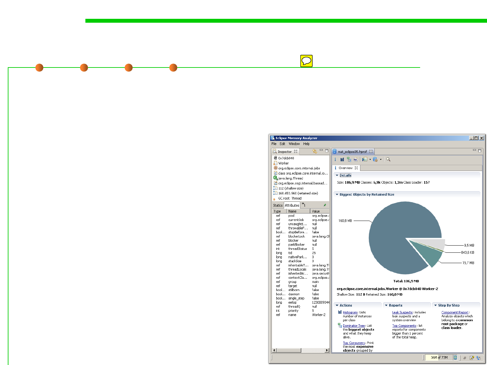

Memory dump
1.1 Multi-Dimensional Views of Software Construction
▪ Memory dump: a file on hard disk containing a copy of the contents
of a process's memory, produced when a process is aborted by
certain kinds of internal error or signal.
– Debuggers can load the dump file and
display the information it contains
about the state of the running program.
– Information includes the contents of
registers, the call stack and all other
program data (counters, variables,
switches, flags, etc).
– It is taken in order to analyze the status
of the program, and the programmer
looks into the memory buffers to see
which data items were being worked
on at the time of failure.